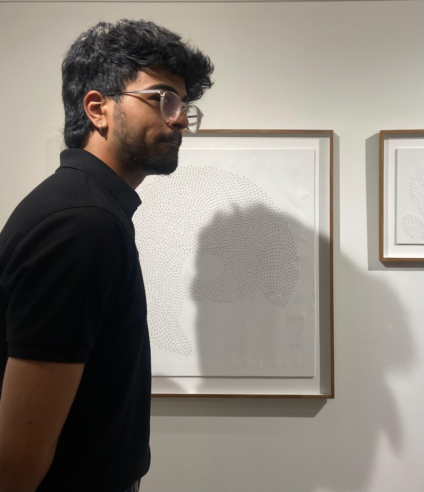
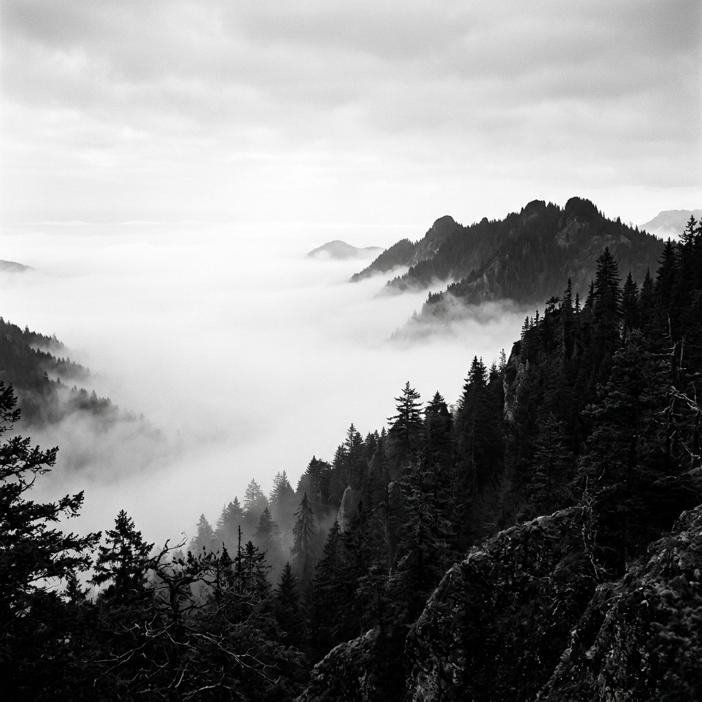

Architectural Perspective
Defining Space
Through Void.
A multi-disciplinary studio led by Adley Fernandes, dedicated to the intersection of structural integrity and minimal aesthetics.

The Narrative
Architecture is not merely the construction of walls, but the curation of movement and light. Founded in 2014, Studio Arch began as an exploration of how digital environments can mimic the tactile weight of physical structures.
With a background in both classical masonry and modern interaction design, I bridge the gap between the permanent and the ephemeral. Every project starts with a single line—a commitment to precision that rejects the decorative in favor of the essential.
I believe that luxury is found in the pauses between elements. My work seeks to provide those pauses, creating interfaces and environments that breathe, inviting the user to stay longer, think deeper, and move with intent.
Read the Full Manifesto arrow_forwardCore Competencies
The Toolkit of Precision
Spatial Logic
Structural planning for digital systems, ensuring scalability and visual balance through grid-based discipline.
- — Grid Systems
- — Information Architecture
- — Responsive Frameworks
Editorial Typography
Type as architecture. Selecting and scaling letterforms to command attention and drive narrative flow.
- — Variable Fonts
- — Readability Audits
- — Custom Type Pairing
Visual Stacking
Creating depth through tonal layering and atmospheric shifts, eliminating the need for decorative lines.
- — Depth Mapping
- — Tonal Hierarchy
- — Glassmorphism

Selected Tools
Awards & Exhibitions
Recognized globally for pushing the boundaries of minimalist digital design and structural interaction.